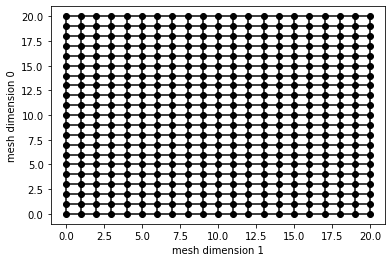
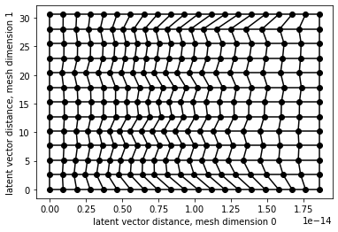
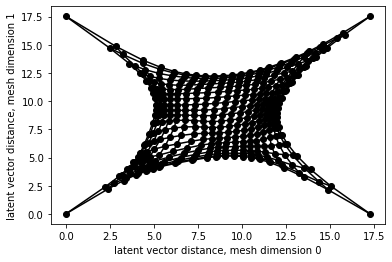
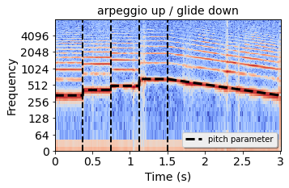
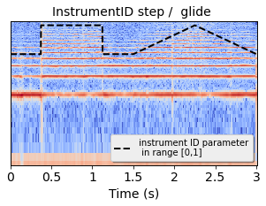
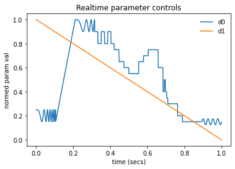

A System Architecture for Generative Audio Texture Modelling
Sample Grids on GAN latent subspaces
Please click on the images below to interact with the sounds generated by their respective grids.

NSynth Trumpinet, Original GAN subspace

NSynth Trumpinet,
SOM Adapted grid with pinned edges
BOReilly
Textures, Original GAN subspace

BOReilly Textures,
SOM Adapted grid
with pinned corners
Evolution of pitch and timbre over time
This section shows the evolution of the pitch and instrument timbre over a short segment of time
playing the
opening segment of George Gershwin’s Rhapsody in Blue with its famous long pitch glide, short and long
notes, and trills as the instrument continuously morphs between the two instrument types.

An arpeggio of pitches over an octave (midi number 64, 68, 71, 76) followed by a one octave glide back
down

A stepped and gliding transition between a clarinet-like, and a trumpet-like sound at a constant
pitch (the[0,1] instrument parameter is compressed in the inset)

Parameter sequence for a "reinterpreted" opening segment of George Gershwin’s Rhapsody in Blue with
glides, various note lengths, vibrato,and an instrument morph.